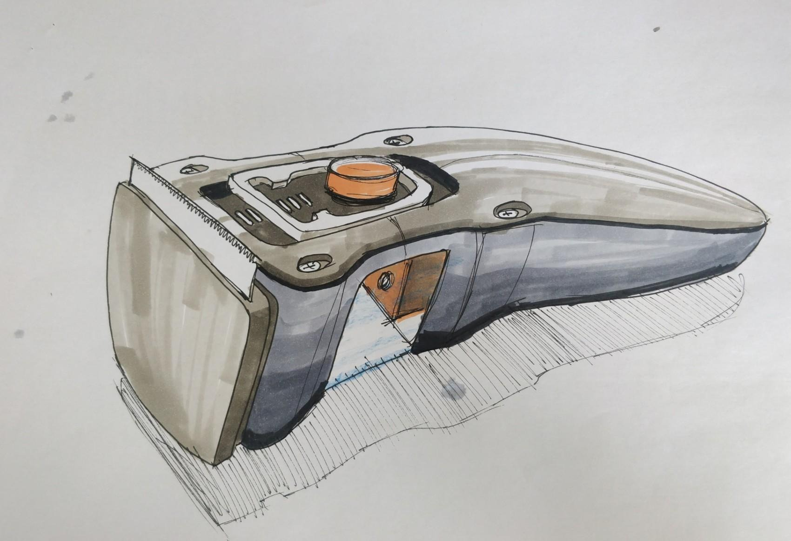
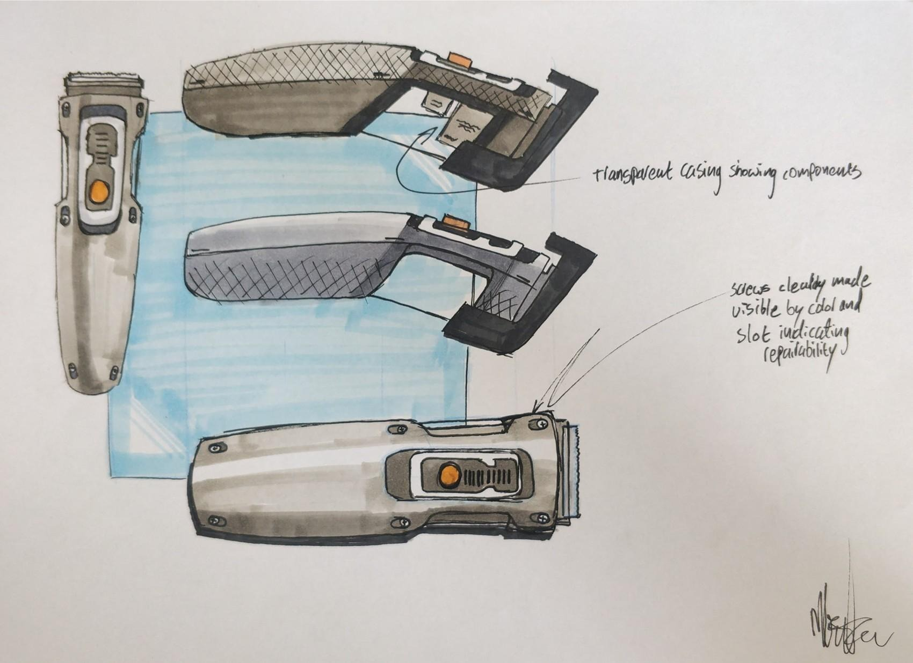
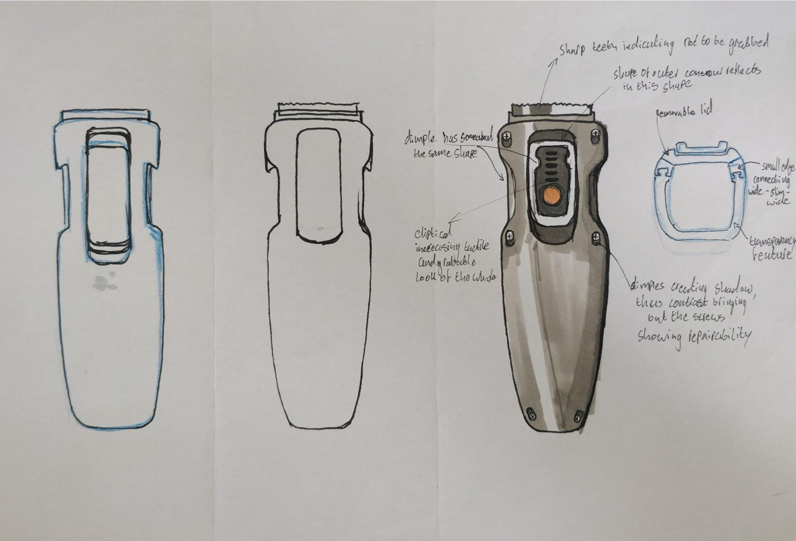

Project bitje is a project that explores the possibility of creating consumer products and electronics that are
easily repairable and last a long time without comprimising on the performance of products.
An exploration into how to visualize repairability and make a device repairable. Using a beard trimmer as a prop.


